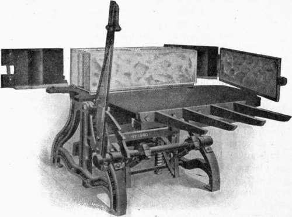

Art. 87. General Methods Of Manufacture
Description
This section is from the book "Cement And Concrete", by Louis Carlton Sabin. Also available from Amazon: Cement and Concrete.
Art. 87. General Methods Of Manufacture
783. The apparatus used in making concrete blocks is called a machine, although in its essentials it is merely a mold, and becomes a machine only because of the appliances provided to facilitate the removal of the concrete, or rather in the removal of the mold from the concrete block and resetting it to be filled again.
There are three general methods of making concrete blocks, depending upon the consistency of the mixture and consequent method of compacting the mortar or concrete:
1st
Mortar or concrete only slightly moist, and compacted by tamping.
2d
Mortar or concrete of medium consistency, and compacted by pressure.
3d
Mortar or concrete mixed wet, and poured into molds.
It has been seen that in places where thorough tamping is possible, a rather dry mortar or concrete will give the highest strength in tension, but that in tests of adhesion and compression a mixture containing more moisture gives higher results. See §§ 278, 360, 425, 445, and 518. Mortar of the consistency of moist earth contains sufficient water for the necessary chemical reactions if not permitted to dry out in the setting and the early stages of hardening. The advantage of a greater amount of water comes then from physical causes. Mortar that is fairly dry can be well tamped and give good results, but place broken stone in the same mixture, and the mass is likely to " bridge" and cannot be so well compacted. More water lubricates the mixture and insures close contact of mortar and stone at all points. Strength is not, however, the only requisite in concrete blocks; impermeability, or the quality of being " waterproof," is also essential for the best results. It has been stated in Art. 61 that mortars mixed either very wet or very dry are more permeable, less waterproof, than those of ordinary consistency, but since in the case of concrete large voids are likely to result from insufficient tamping, an excess of water is better than a deficiency. A rather free use of water thus tends to prevent the occurrence of large voids, but results in a larger number of small voids through which water does not easily permeate.
784. Tamped Blocks
This method was the first to come into prominence in the manufacture of concrete blocks, and is now in general use. The ordinary machine used in this method consists of a heavy base plate supported by a frame bringing the plate to a convenient height. The plates to form the ends and sides of the block are movable, usually on hinges, and are drawn away from the block, after the molding is completed, by moving a lever or crank. The cores are likewise withdrawn from the block after molding, either by raising or lowering the cores, or by raising the completed block. The block is removed from the machine on a pallet of iron or wood, and is set away to " cure " or harden.
UPRIGHT MACHINE FOR TAMPED BLOCKS.
The block may be molded upright or with face down. If the former, the pallet is set on the base plate and the cores are either inserted through holes in the pallet or lowered into the mold from above. If the block is molded face down, the cores are inserted horizontally, and the block is revolved 90 degrees to set it on the pallet. The special advantages claimed for molding blocks face down are that a facing mixture may be readily used, and, as the mortar is tamped in layers perpendicular to the direction of percolation through the block, it is more likely to be waterproof, A layer, one inch or more in thickness, of colored mortar, or of richer mixture to secure water-tightness, is first tamped against the face plate, and the block then completed with the ordinary mortar. The disadvantage of this method is that the mortar is tamped in layers lying parallel to the direction of stress in the wall, and is therefore less adapted to resist this stress, and that thorough tamping around the cores is more difficult. As to the variations in methods of removing cores, it appears that for blocks molded upright, other things being equal, it is mechanically better to withdraw the cores rather than raise the block, and better to have the cores enter from the bottom rather than to lower them into the mold from above, since the space above the block should be kept clear.
Pallets may be of iron or wood. The latter are lighter and much less expensive, and if properly made and cared for will do good service, but if neglected will soon warp and become useless. Moreover, they can be made at any saw-mill, thus saving Cost of transportation.
In buying an outfit one should select first that machine which will make the most serviceable block in the greatest variety of salable shapes. The next most important point is that the machinery shall be as simple as possible to accomplish the necessary movements, and that the working parts be protected from mortar that may be dropped in filling the mold. The castings should be strong and well finished, especially where the sides of the molds join, in order that the mold may be easily assembled and the corners of the block properly formed.
785. Use Of The Machine
The inner faces of the mold plates, the pallets, and all working parts, must be kept clean. A stiff bristle brush such as the ordinary horse brush is excellent for this purpose. If through neglect the mortar is allowed to harden on the mold plates a wire brush will be found convenient for cleaning, and if the mixture shows a tendency to stick to the molds an occasional rubbing of the molds with fat salt pork may be found advantageous.
The proportions and mixing of the mortar are treated elsewhere. (See Chapter XII.) When thoroughly mixed the mortar is shoveled into the mold, and tamping is commenced as soon as a layer of about three inches is in place. Tamping should be thorough, as in all concrete work where the mixture is used dry enough to permit it; especial care must be taken with the corners and cores, otherwise the angles of the block will not be full and sharp, and crumbling will result. The face of the rammer should be small and the tamping vigorous. In a large factory a pneumatic tamper will be found advantageous. As the mortar is added the ramming is continued until the mold is entirely filled. It is then struck off with a straight edge and the top quickly troweled smooth. The cores are now removed, the sides of the mold disengaged, and the block removed to the curing shed, or yard, on its pallet. When the block is molded face down, the mold is first filled and tamped up to the level of the lower side of the hollows, the cores are then inserted from the sides, and the filling proceeds. When completed the cores are removed, the mold opened, and the block turned through ninety degrees on to the pallet.
Continue to:
- prev: Chapter XXIII. Concrete Building Blocks, Their Manufacture And Use
- Table of Contents
- next: Art. 87. General Methods Of Manufacture. Continued